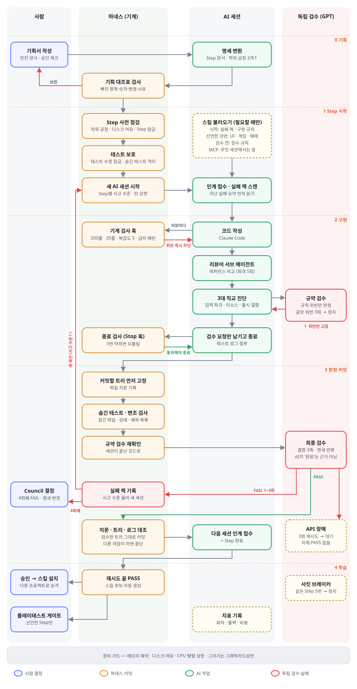

레드 샌드위치 하네스
| 개발 | 터보워크 (엄태진) |
|---|---|
| 첫 공개 | 2026년 10월 27일 |
| 라이선스 | MIT (공개 명세) |
| 현재 버전 | v6.6.8 (2026.11.18) |
| 가장 긴 지침서 | v6.4, 756줄 |
| 현재 지침 본문 | 807줄 (코어 217 + 모듈 8개 590) |
| 판정 규칙 | 97개 (R01~R101, 결번 4) |
| 구현 AI | Claude Code |
| 검수 AI | OpenAI GPT (규약 검수 · 최종 검수, ChatGPT 구독 Codex 우선) |
| 셀프테스트 | 208 / 208 통과 |
| 1회 통과율 | 성능 벤치마크 참고 |
| 저장소 | GitHub |
1.개요
레드 샌드위치 하네스는 터보워크가 만든 AI 코딩 에이전트용 개발 파이프라인이다. 핵심 생각은 하나다. 코드를 쓴 AI의 말("완료했습니다", "테스트 통과")을 판정 근거로 쓰지 않는다. 대신 기계 검사, 다른 회사 AI의 검수, 실행기가 직접 확인한 결과만 인정한다.
처음에는 AI에게 주는 긴 지침 문서였다. 하지만 글로 쓴 규칙은 AI가 바쁠 때 건너뛰었다. 그래서 규칙을 하나씩 코드(훅·실행기·검수 도구)로 옮겼다. 지금 하네스의 대부분은 지침이 아니라 어기면 진행이 막히는 프로그램이다.
2.이름의 유래
| 부분 | 뜻 |
|---|---|
| 위 빵 (Top Bread) | 명세 잠금 + TDD 관문. 코드를 쓰기 전에 무엇을 만들지, 어떻게 확인할지를 고정한다. |
| 속 (Filling) | 작은 순수 단위로 쪼갠 코드. 파일 200줄, 함수 35줄, 복잡도 5 이하. |
| 아래 빵 (Bottom Bread) | 엄격한 격리. 세션·테스트·비밀값·상태 파일을 서로 섞이지 않게 한다. |
| 빨간 줄 (Red) | 독립 레드팀 검수관. 코드를 쓴 AI와 다른 회사의 AI가 반례를 찾는다. |
3.탄생기
3.1.1막: AI가 "다 했습니다"라고 말할 때
시작은 2026년 6월, 개인 프로젝트로 만들던 주식 자동매매 프로그램이었다. 비전공자인 대표는 AI 채팅에 물어 가며 프로그램을 만들기 시작했다(6월 28일 첫 코드, 7월 14일 v28). 7월 3일, 에러를 고쳐 달라고 하자 AI가 전날 만든 화면 코드를 통째로 덮어써 버렸다. 대표는 그날 세 가지 원칙을 적었다. 통째로 덮어쓰지 말고 바꿀 부분만 고칠 것, 버전마다 번호를 붙여 보관할 것, AI의 "다 들어 있습니다"를 믿지 말고 실행해서 확인할 것. 이어서 백테스트도 "결과보다 규칙 먼저"(한 번에 변수 하나, 비용 100% 반영)로 정했다. 이것이 하네스의 첫 씨앗이다.
2026년 10월, 대표는 Kaggle 대회와 공모전 작업을 AI 코딩 에이전트(Codex)에게 맡기고 있었다. 문제는 AI가 자주 끝나지 않은 일을 끝났다고 보고한다는 것이었다. 테스트를 돌리지 않고 "통과"라고 쓰거나, 막힌 부분을 조용히 건너뛰었다.
첫 대응은 단순했다. 구현은 Codex가 하고, 검수는 다른 회사 AI(Gemini) 웹 화면 "검수실"에서 따로 받는다. 검수 결과는 대화 원문과 캡처로 보존하고, PASS를 추정하거나 나중에 소급해 적지 않는다는 원칙을 세웠다. 이것이 "레드팀" 아이디어의 시작이다.
3.2.2막: 370줄에서 756줄까지, 일주일
사고가 날 때마다 지침서에 규칙이 붙었다. 10월 25일 v2.7에서 "샌드위치"라는 이름이 처음 등장했고(판매용 제품판), 10월 27일 명세를 GitHub에 공개했다. 10월 28일 v5.5는 370줄이었다. 실패를 모아 두는 "실패 랙", 세 방향에서 따로 결함을 찾는 "3대 직교 진단", 한 번에 묶어 고치는 "1회 통합 패치"가 차례로 들어왔다.
11월 2일 v6.4는 756줄이 됐다. 일주일 만에 두 배다. 기획·구현·검수·실패 기록·역공학·하드웨어 견적·UI 품질·자동매매 안전장치까지 한 문서에 담은 "규칙서"였다.[1]
3.3.3막: 글로 쓴 규칙은 지켜지지 않는다
756줄 규칙서는 바로 한계를 드러냈다. AI는 긴 문서의 뒤쪽 규칙을 놓쳤다. 11월 3일, 같은 배틀로얄 게임을 두 방식으로 만들게 한 A/B 실험에서 결정적인 패턴이 나왔다. AI가 명세 문서에 "이건 확정 사항이니 다시 묻지 않는다" 같은 문구를 써넣고, 그 문구를 근거로 검수 단계를 건너뛰었다.
그래서 Claude Code용 v6.6에 맨 앞 조항으로 "지침 불가침 원칙"을 넣었다. 명세 문구, 지시의 범위, 에이전트의 판단으로는 어떤 관문도 끌 수 없고, 해제는 사람이 조항 번호를 직접 지목할 때만 된다. 동시에 지침서는 핵심(코어)만 남기고 나머지는 필요할 때만 불러오는 모듈 8개로 쪼갰다. 코어는 지금 216줄, 모듈 8개는 합쳐 582줄로, 지침 본문은 모두 798줄이다. 그리고 이 본문에서 "어기면 FAIL"인 판정 기준만 뽑아 번호를 붙인 것이 규칙 원본 rules.md의 97개 규칙이다.
3.4.4막: 규칙을 코드로 옮기다
11월 7일 밤, 첫 셀프테스트를 돌렸다. 일부러 규칙을 어긴 가짜 프로젝트들을 하네스에 넣고, 하네스가 잡아내는지 보는 시험이다. 결과는 45건 중 10건 실패. 글로 쓴 규칙 상당수가 실제로는 아무것도 막지 못하고 있었다.
다음 날 새벽부터 하네스를 git 저장소로 관리하며 규칙을 코드로 옮겼다. 11월 8일 0시 42분부터 5시 3분까지 하룻밤에 Step 11~20을 끝냈다.
- 파일을 저장하는 순간 코드 크기·복잡도를 검사하는 훅
- 테스트를 고치지 못하게 잠그고, 일부 테스트는 세션이 볼 수 없게 숨기기
- 세션 기록 전체 보관, 실패한 시도의 요약을 다음 세션에 전달
- 외부 스킬 설치 전 보안 검사
- Step 안에서 리뷰어 서브 에이전트 호출, 레퍼런스 비교 루프
11월 9일에는 흩어진 규칙을 rules.md 하나(R01~R101)로 모으고, 규칙 위반만 판정하는 GPT 규약 검수관을 붙였다. 하네스 자체를 이 체계로 고치는 동안 GPT가 실제 결함 12건을 찾아냈다.
3.5.5막: "AI의 PASS"와 "진짜 PASS"를 떼어 놓다
마지막으로 남은 구멍은 판정을 누가 받느냐였다. 그때까지는 코드를 쓴 세션이 직접 검수를 부르고 결과를 기록했다. 이론상 세션이 기록을 꾸밀 수 있었다.
11월 13~14일 정비(v6.6.1)에서 이것을 뒤집었다. 세션은 "검수해 주세요" 요청 파일만 남기고 끝난다. 실행기가 세션이 끝난 시점의 코드로 검수를 직접 부르고, 직접 받은 판정만 인정한다. 검수 API가 장애일 때 "자체 PASS"로 넘어가던 조항도 지웠다.
11월 14일 저녁에는 v6.6.1에서 v6.6.7까지 하루에 7판을 냈다. 목표는 "검수한 코드 = 커밋하는 코드"를 증명하는 것이었다. 커밋할 파일 묶음(git 트리)을 먼저 고정하고, 검수 기록에 그 트리 ID를 묶고, 그 트리 그대로 커밋한다. 그 사이에 파일이 한 글자라도 바뀌면 커밋하지 않고 멈춘다. 같은 날 셀프테스트는 112건 모두 통과했다.
3.6.6막: PC가 멈출 때마다 장치가 하나씩
PC 한 대로 일하다 보니 하네스는 장비도 지켜야 했다. 장치마다 그 장치를 만든 사건이 있다(5절). 하네스의 규칙 대부분은 이렇게 실제로 무언가가 깨진 뒤에 생겼다. 실패는 "실패 랙"에 무엇이 · 어떤 환경에서 · 어디서 깨졌고 · 무엇으로 막는지 4칸으로 적는다. 지금 공통 실패 랙에 255개 항목이 있다(2026.11.18).
4.지침서 버전 연표
| 날짜 | 버전 | 줄 수 | 핵심 변화 |
|---|---|---|---|
| 6~7월 | (채팅 규칙) | — | 자동매매 개발 중 생긴 원칙: 덮어쓰기 금지, 버전 보관, 실행으로 확인, 결과보다 규칙 먼저 |
| 07.22 | 첫 지침 파일 | 82 | Codex용 AGENTS.md 첫 판: "시니어 개발자이자 코딩 코치" 역할, 전체 파일 덮어쓰기 금지 — 지금 코어 §1의 원형 |
| 08.06 | 공통 개발 작업 지침 | 149 | 모든 프로젝트 공통 지침으로 확장: 역할·안전·검증·토큰 사용 제한 |
| 08.21 | 공통 지침 | 298 | 병렬 작업 에이전트 규칙 추가 (8월 최대판) |
| 10.21 | 공통 지침 | 366 | 샌드위치 직전 최대판 |
| 10.25 | v2.7 | — | "샌드위치" 이름 첫 등장 (판매용 제품판, 한국어·영어) |
| 10.27 | v5.1 | — | 나노 하네스 제품판 (중국어판 포함) |
| 10.28 | v5.5 | 370 | 레드 샌드위치 구조 + 스파크 하네스 + 2단 실패 랙 |
| 10.29 | v6.0 | 386 | 실패 랙 증류, 결정론 엔진 |
| 10.29 | v6.1 | — | UI 실험실(UI Lab) 선택 항목 추가 |
| 10.29 | v6.2 | 510 | 3대 직교 진단, 1회 통합 패치, 게이트키퍼 |
| 10.30 | v6.3 | 529 | 레드팀 게이트키퍼 실용화 |
| 11.02 | v6.4 | 756 | 실패 랙 자동 체결, 역공학 모드 — 가장 긴 판 |
| 11.03~05 | v6.5 | 630→681 | 코어 §0~§8 + 모듈 M1~M8로 재구성 |
| 11.03~04 | v6.6 | 654 | Claude Code로 이전, 지침 불가침 원칙 |
| 11.08~ | git 관리 | 코어 216 | 규칙을 훅·실행기·검수 도구로 이전 |
| 11.14 | v6.6.7 | — | 검수 트리 고정 커밋, 복구 조건 강화 |
| 11.18 | v6.6.8 | 코어 217 | 결함 등급제(차단 결함만 멈춤), 결함 한 번에 받기, ChatGPT 구독 검수 우선, 세션 관측 |
| 11.19 | v6.6.8 핫픽스 | — | 검수 상한 10회, 넘으면 자체 검수 + 어려운 문제 보관소(구동·핵심 로직을 막을 때만 멈춤) |
5.사건과 생긴 장치
| 날짜 | 무엇이 깨졌나 | 생긴 장치 |
|---|---|---|
| 11.03 | AI가 명세에 문구를 써넣어 검수를 건너뜀 | 지침 불가침 원칙(§00) |
| 11.07 | 백그라운드 명령이 로그를 232.6GB까지 써서 D 드라이브가 가득 참, 개발 도구 실행 파일이 지워짐 | 디스크 여유 가드(50GB), 세션 종료 정리 훅 |
| 11.07 | 첫 셀프테스트 45건 중 10건 실패 | 상태 파일 원자 교체 도구, 규칙의 코드화 |
| 11.10 | 실행기가 죽었는데 잠금 파일만 보고 17분간 진행 중으로 착각 | 프로세스 생존 확인 규칙 |
| 11.12 | 11GB 모델이 다른 작업과 겹쳐 새벽에 PC 전체가 멈춤 | 메모리 예약 가드 memguard |
| 11.12 | 세션이 끝나지 않아 실행기가 35분간 대기 | "걸린 세션도 멈춤" 판정 |
| 11.13 | 상태 파일 동시 갱신 30회 중 4회 내용 유실 | 잠금 + 버전 번호 병합 → 유실 0회 |
| 11.15 | 렌더 작업자 과다로 CPU 100% 10분, 짧은 프로세스 1,500개 이상 쌓여 강제 종료 2회 | CPU 병렬 상한(12코어 → 3개), cpuguard |
| 11.15 | 화면 시험이 마우스를 보이지 않는 창에 가둠 | 시험용 대역, 그래픽카드 강제 훅 gpu_guard |
6.구조
- 명세: 코드보다 먼저 입력·출력·합격 시험을 고정한다.
- LLM 세션(Main): Runner가 새 LLM 세션(Claude Code)을 열고 Step 명세를 넘긴다. 세션은 필요한 skill을 불러오고, Failure RAG·Skill RAG에서 관련 기록을 찾은 뒤 이 Step 하나만 만든다. 저장할 때마다 hook이 검사한다.
- Sub-LLM: Main 세션은 reviewer·comparer·worker 같은 보조 LLM을 병렬로 띄울 수 있다. Sub-LLM은 결과만 돌려주고, PASS/FAIL은 Runner와 Audit LLM이 정한다.
- 기계 검사: 저장할 때마다 코드 크기·복잡도 훅이 돈다.
- Audit LLM · Rule(GPT · 다른 회사 모델): 변경분을 적어 둔 규칙과 대조한다.
- 검수 요청: 세션은 요청 파일만 남기고, Runner가 그것을 읽어 Audit LLM · Final(GPT · 다른 회사 모델)을 부른다.
- FAIL: Final audit가 결함을 Blocker와 나머지로 나눈다. Blocker는 한 번에 모두 돌려받아 Failure RAG에 남기고, Effort를 한 단계 올린(low → medium → high) 새 세션이 한 패치로 고친다.
- Known issues: Blocker가 아닌 결함은 Step을 멈추지 않고 Known issues에 쌓인다. Defect analyst(subagent)가 묶어서 같은 파일을 고치는 뒤 Step에 연결한다.
- PASS: 검수한 트리 그대로만 Commit한다. 어떤 Step은 Human gate(Playtest·사용자 확인)를 거친 뒤 다음 Step으로 넘어간다.
- Milestone: Final audit (full)이 마일스톤 전체를 검수하고 남은 Known issues를 한 패치로 정리한다.

- 실행기(
run_pipeline.ps1)가 Step마다 새 AI 세션을 띄운다. 한 세션은 한 Step만 한다. - 세션이 파일을 고칠 때마다 훅이 코드 구조(AST)를 검사한다. 세션이 끝날 때 다시 검사하고, 3번 연속 막히면 되돌린다.
- 세션은 GPT 규약 검수를 통과한 뒤 검수 요청 파일만 남기고 끝난다.
- 실행기가 GPT 최종 검수를 부른다. FAIL이면 사고 수준을 한 단계 올린 새 세션이 실패 기록을 읽고 고친다(최대 9번). Step 검수에서는 차단 결함만 FAIL로 치고, 나머지는 알려진 문제로 쌓았다가 마일스톤 검수에서 한꺼번에 고친다.
- 10번째도 FAIL이면 AI가 자체 검수를 한다. 남은 결함이 프로그램 구동이나 핵심 로직을 막지 않으면 어려운 문제 보관소에 넣고 다음 Step으로 가고, 막을 때만 사람에게 넘긴다. 보관한 문제는 사람이 나중에 해결법을 먼저 찾는다.
- PASS면 검수한 트리 그대로 커밋하고, 다음 세션이 인계를 접수해야 Step이 완료된다.
7.숫자로 보는 하네스
| 항목 | 값 |
|---|---|
| 규칙 | 97개 — 코드 훅이 검사 12, 훅+GPT 10, GPT 판단 23, 작업 절차 52 |
| 코드 상한 | 파일 200줄(승인 시 350), 함수 로직 35줄, 순환 복잡도 5, 루프 중첩 2단 |
| 셀프테스트 | 11.07 35/45 → 11.14 112/112 → 11.18 208/208 |
| 원자 교체 부하 시험 | 3경로 × 900회 쓰기, 남은 임시 파일 0, 재시도 읽기 오류 0 |
| 검수 도구 단위 테스트 | 최종 검수 215개, 규약 검수 59개 |
| git 커밋 | 116개 (11.08~11.18) |
| 공통 실패 랙 | 255개 항목 |
| 적용 프로젝트 | 23개 |
| 실제 비용 | 구독료(Claude · ChatGPT)만. Step을 더 돌려도 추가 지출이 없다 |
8.성능 벤치마크
하네스의 공식 성능표다. 핵심 지표는 1회 통과율, 곧 다른 회사 AI의 최종 검수를 처음 한 번에 통과한 Step의 비율이다. 공개 AI 코딩 시험(SWE-bench 등)은 정해진 테스트 통과만 보지만, 이 표는 그 위에 결함을 찾으려고 작정한 검수까지 통과해야 성공으로 친다.
측정 시각 2026-11-19 10:41 · 누적 범위 2026-11-08부터 · 매주 월요일 자동 갱신. 숫자는 각 프로젝트 실행기가 Step을 끝낼 때 남긴 기록에서 그대로 계산한다.
| 지표 | 누적 | 최근 7일 | 목표 |
|---|---|---|---|
| 완료한 Step | 159개 (17개 프로젝트) | 86개 | — |
| 1회 통과율 (최종 검수를 한 번에 통과) | 61% | 44.2% | 85~90% |
| Step당 최종 검수 횟수 | 1.85 | 2.3 | 1.15~1.25 |
| 검수 횟수 분포 | 1회 96 · 2회 29 · 3회 17 · 4회 11 · 5회 이상 6 | 1회 38 · 2회 20 · 3회 13 · 4회 9 · 5회 이상 6 | — |
| 배포 뒤 사람이 찾은 결함 | 측정 준비 중 | — | — |
| 쌓인 기록 | 값 |
|---|---|
| 셀프테스트 | PASS 191 / 전체 211 · 건너뜀 등 20 |
| 공통 실패 랙 (Failure RAG) | 302건 |
| 프로젝트 실패 랙 | 208건 |
| 성공 방법 후보 (Skill RAG) | 76개 |
측정 추이
| 측정일 | 누적 Step | 1회 통과율 | 검수 횟수 |
|---|---|---|---|
| 2026-11-18 | 152 | 62.5% | 1.82 |
| 2026-11-18 | 152 | 62.5% | 1.82 |
| 2026-11-19 | 159 | 61% | 1.85 |
하네스 버전별
| 하네스 버전 | Step | 1회 통과율 | 검수 횟수 | 롤백 |
|---|---|---|---|---|
| v6.6 · Gemini 검수 시기 | 42 | 97.6% | 1.1 | 0 |
| v6.6 · GPT 검수 전환 뒤 | 62 | 45.2% | 2.18 | 0 |
| v6.6.1~6.6.7 (실행기 판정·트리 고정) | 46 | 54.3% | 2.02 | 0 |
| v6.6.8 (결함 등급제·구독 검수) | 6 | 33.3% | 2 | 0 |
| v6.6.8 핫픽스 (검수 상한 10회·자체 검수) | 3 | 33.3% | 2.67 | 0 |
날짜별
| 날짜 | Step | 1회 통과율 | 검수 횟수 | 롤백 |
|---|---|---|---|---|
| 11-08 | 42 | 97.6% | 1.1 | 0 |
| 11-10 | 8 | 50% | 1.75 | 0 |
| 11-11 | 23 | 60.9% | 1.57 | 0 |
| 11-12 | 31 | 32.3% | 2.74 | 0 |
| 11-13 | 2 | 100% | 1 | 0 |
| 11-14 | 10 | 60% | 1.9 | 0 |
| 11-15 | 24 | 41.7% | 2.21 | 0 |
| 11-16 | 4 | 50% | 3 | 0 |
| 11-17 | 6 | 83.3% | 1.17 | 0 |
| 11-18 | 6 | 33.3% | 2 | 0 |
| 11-19 | 3 | 33.3% | 2.67 | 0 |
검수 횟수 분포 (몇 번 만에 통과했나)
| 최종 검수 횟수 | Step | 비율 |
|---|---|---|
| 1회 | 96 | 60.4% |
| 2회 | 29 | 18.2% |
| 3회 | 17 | 10.7% |
| 4회 | 11 | 6.9% |
| 5회 | 1 | 0.6% |
| 6회 | 2 | 1.3% |
| 8회 | 1 | 0.6% |
| 10회 | 2 | 1.3% |
분야별
| 분야 (프로젝트 수) | Step | 1회 통과율 | 검수 횟수 | 롤백 |
|---|---|---|---|---|
| 업무 도구 (5개) | 50 | 50% | 2 | 0 |
| 사업 제품 (3개) | 45 | 55.6% | 1.78 | 0 |
| 자동매매 (1개) | 25 | 96% | 1.12 | 0 |
| 외주(크몽) (3개) | 20 | 55% | 2.8 | 0 |
| 영상 (2개) | 11 | 45.5% | 1.91 | 0 |
| 하네스 시험 (1개) | 5 | 100% | 1 | 0 |
| 채널 운영 (1개) | 2 | 50% | 1.5 | 0 |
| 쇼핑몰 (1개) | 1 | 100% | 1 | 0 |
목표치는 2026년 11월 18일에 정한 예상이다. 결함 등급제(11.18 적용)와 Failure·Skill RAG의 벡터 검색 이관(RAG 서버 증축 뒤)을 거치며 실측과 비교한다. 읽을 때 주의할 점이 두 가지 있다. 첫째, 11월 8일 통과율(약 98%)은 최종 검수를 Gemini가 맡던 시기의 값이다. 같은 날 GPT 검수로 바꾼 뒤 기준이 크게 엄격해졌으므로, 실제 비교는 "GPT 검수 전환 뒤"부터 보는 것이 맞다. 둘째, 최근 7일 수치가 누적보다 낮은 것은 이 기간에 하네스 자체 정비, 실행기 판정 강화, 결함 한 번에 받기가 겹쳤기 때문이다. 공개 표의 분야별 칸은 프로젝트 이름 대신 분야로 묶었다.
9.한계
- 검수는 표본 검사에 가깝다. 같은 모델로 PASS였던 검수를 다시 돌리면 20% 안팎에서 새 지적이 나왔다(2026.11.16 자체 비교 20건).
- 훅이 기계로 막는 규칙은 22개뿐이고, 나머지는 GPT 판단이나 절차에 기댄다.
- Windows PC 한 대 환경에 맞춰져 있다.
- 대표는 이 규칙서를 "800줄 규칙서"라고 부른다. 한 파일로 가장 길었던 판은 v6.4의 756줄이고, 지금은 코어 217줄 + 모듈 590줄 = 807줄로 나뉘어 있다.